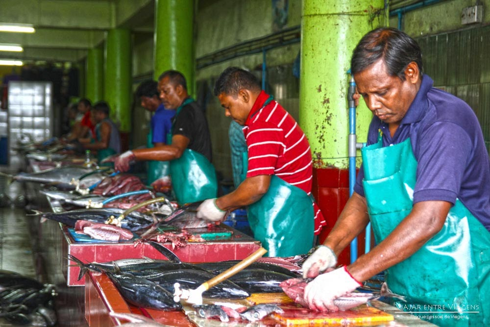
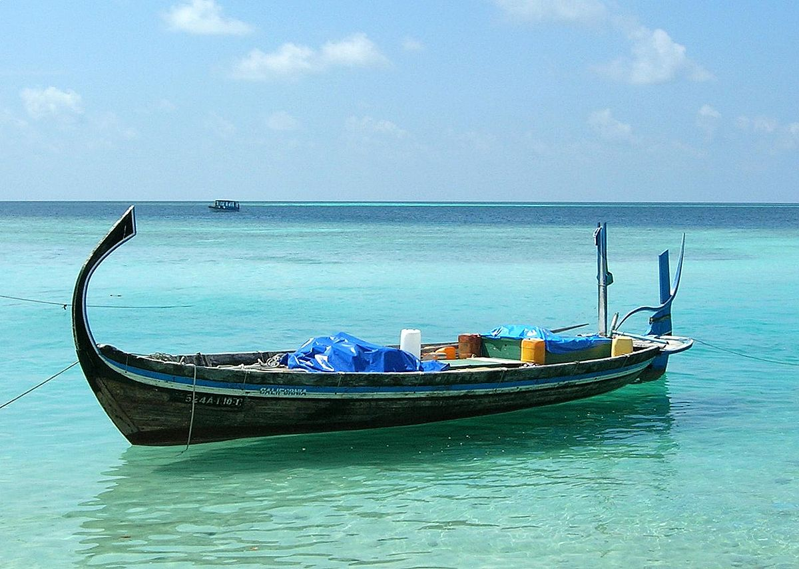
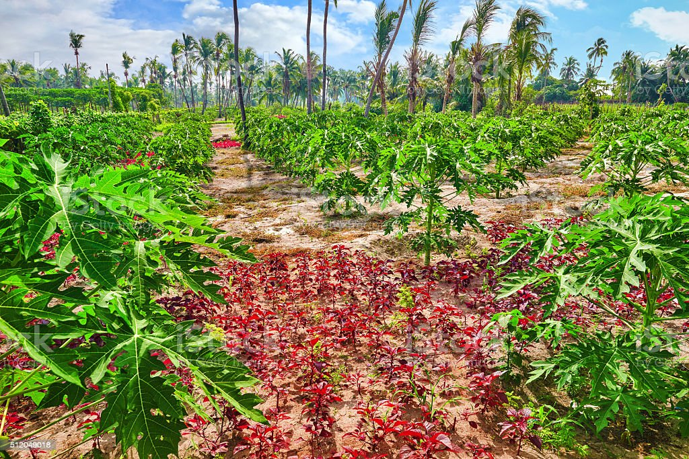
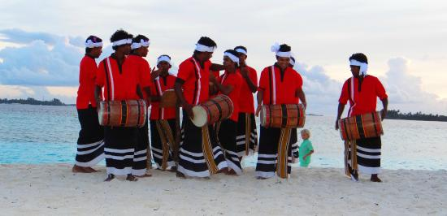
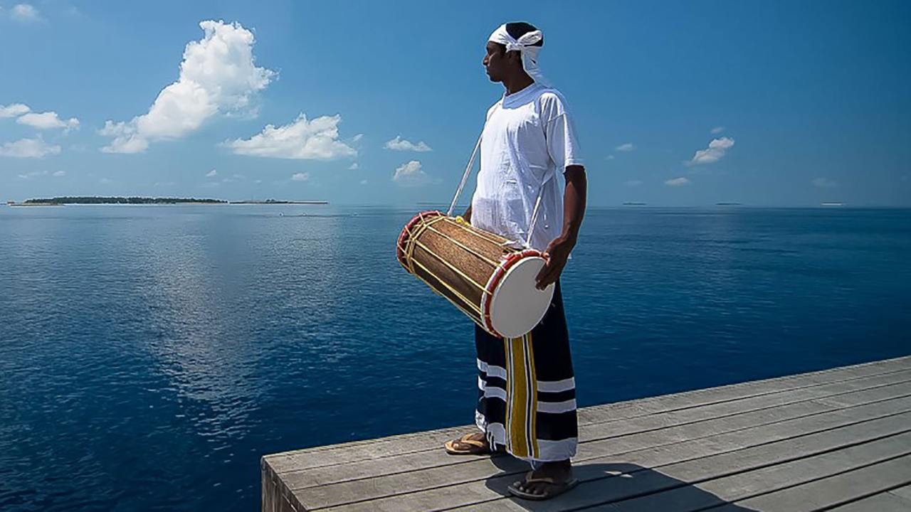
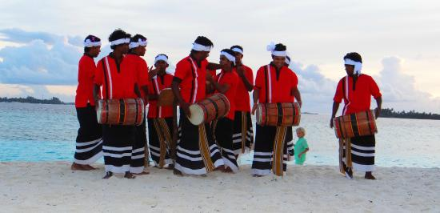
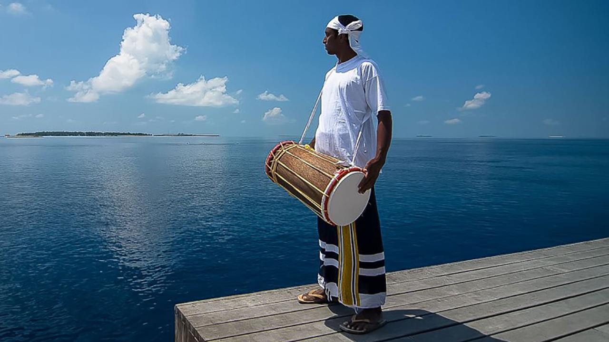

Econômia e Cultura
Econômia
As Maldivas possuem um IDH elevado, sendo considerado um dos melhores lugares para se morar na Ásia. Além do turismo a economia local é fortemente influenciada pela pesca. Boa parte dos moradores trabalham nesta atividade direta ou indiretamente.
PIB(Produto Interno Bruto) de setor em porcentagem:
|
Setores
|
PIB %
|
|
Agricultura/Pesca
|
(20%)
|
|
Indústria
|
(18%)
|
|
Comércio/Serviço
|
(62%)
|
O PIB total das maldivas é igual a 5,406 bilhões USD (2021).



Cultura
A cultura das Maldivas em relação à música tem raízes na cultura africana, como no caso do Bodu-Beru, o gênero musical mais comum da região.
Reza a lenda que esse estilo musical foi introduzido no país por marinheiros do Oceano Índico, por volta do século 11 dC.
 



Religião
Em relação à religião, o local é um país de maioria muçulmana, o que impacta diretamente na cultura das Maldivas, repleta de regras de convivência.
Entre essas regras, uma das principais é em relação ao uso de biquínis, pois há praias específicas para usar essa peça, chamadas de Bikini Beach.
Isso significa que nos demais lugares e praias públicas, é preciso se vestir com roupas que cobrem os ombros e joelhos, sem decotes e que não sejam justas.
Além disso, por conta da religião, é comum que lojas e comércios fechem às suas portas em horários de oração.


Mais detalhes
Página inicial